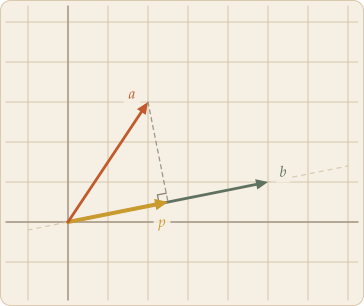
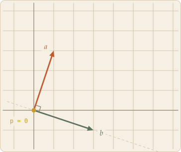
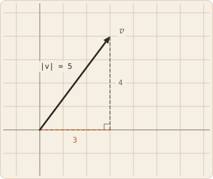
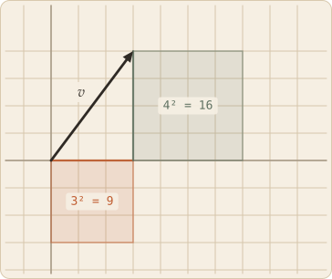
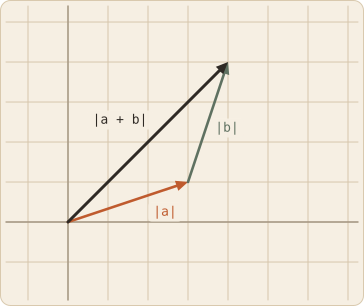
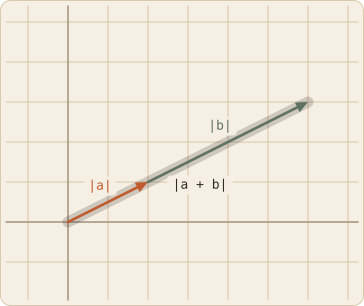

Two vectors go in, a single number comes out. That number answers a specific question: how much of one vector points along the other? It turns out to be the cheapest useful thing you can compute about a pair of vectors, which is why it shows up everywhere from lighting models to search engines.
Skip to the board ↓The recipe is almost too simple. Pair up the components, multiply each pair, add the results:
Nothing about that suggests geometry, yet the answer is deeply geometric. Drop a perpendicular from the tip of a onto the line through b. Where it lands marks p, the shadow a casts on b — and the length of that shadow, multiplied by the length of b, is exactly the number the arithmetic gave you.

a · b = |p| |b|

a · b = 0
That gives the second formula, the one that makes the geometry explicit. If θ is the angle between them, the shadow has length |a| cos θ, so:
Read that as a similarity score. When the vectors point the same way, cos θ = 1 and the product is as large as it can be. Swing them apart and it shrinks. At exactly 90° the cosine is zero, the shadow collapses to a point, and so does the dot product — which is why a · b = 0 is the test for perpendicular, and why it's usually easier to check two vectors are at right angles by multiplying and adding than by measuring any angle. Push past 90° and the shadow falls on the far side of the origin, the cosine goes negative, and so does the product: the vectors now disagree.
Both formulas describe the same number, which is a genuinely useful fact — one side is trivial to compute, the other is easy to reason about. Setting them equal is how you get the angle between two vectors in the first place.
Drag either arrowhead.
Try the board with both vectors on top of each other, or just follow the formula. The angle between v and itself is zero, cos 0 = 1, and both lengths are the same, so v · v = |v|². The component recipe says the same thing without mentioning angles at all:
Which is Pythagoras. Drop the components of v as the two legs of a right triangle and the vector itself is the hypotenuse; the theorem says the square built on the hypotenuse equals the two squares built on the legs.

|v|² = 3² + 4²

v · v = 9 + 16 = 25
So v · v is the squared length, and taking a square root undoes it:
This is more than a shortcut. Pythagoras is stated about triangles in a plane, but √(v · v) never mentions triangles, or planes, or even dimensions — it is written purely in terms of the dot product. Feed it a vector with a hundred components and it still returns a length. That is how distance gets carried into spaces you cannot draw: define a dot product, and length, angle, and perpendicularity all follow from it for free.
Put the dot product and the length formula together and two bounds appear. They look like technicalities. They are the reason any of the preceding vocabulary is allowed to exist.
The geometric formula makes this nearly self-evident: a · b = |a| |b| cos θ, and cos θ never escapes the band between −1 and 1 — which is the entire content of the curve plotted under the board. Multiply through and the product of two vectors can never exceed the product of their lengths.
The picture says it even faster. The shadow of a on b has length |a| |cos θ|, and a shadow is never longer than the thing casting it. Multiply both sides of |shadow| ≤ |a| by |b| and you have the inequality.
Deriving it without leaning on the angle takes one more step, and is worth seeing because it never mentions geometry at all. Pick any number t, slide tb along b's line, and look at what is left over. It's a vector, so its squared length cannot be negative:
That is a quadratic in t that never dips below zero, so it cannot cross the axis twice, so its discriminant is at most zero:
(If b is the zero vector both sides are zero and there is nothing to prove.) The t that minimises that quadratic works out to (a · b)/|b|² — precisely the coefficient that produces the shadow on the board. So the algebra is doing exactly what the picture does: subtract off the shadow, then note that whatever sticks out sideways still has a length, and lengths are never negative. Equality happens when nothing sticks out — when a is a multiple of b.
Expand a sum the same way, using v · v = |v|²:
Cauchy–Schwarz caps that middle term at |a| |b|, and the rest is a perfect square:
Both sides are non-negative, so taking square roots preserves the inequality and the result follows.

|a + b| < |a| + |b|

|a + b| = |a| + |b|
The name carries the intuition. Lay a and b tip to tail — the same walk the linear combinations board draws — and a + b is the direct arrow from start to finish. The inequality says the direct route is never longer than the detour. The two agree only when the detour isn't one: when the vectors point the same way and the triangle flattens onto a line.
These two bounds are what promote |v| = √(v · v) from a formula into a usable notion of distance. Define the distance between two points as |u − v| and the triangle inequality becomes the promise that you can never get somewhere faster by detouring through a third point. A "distance" without that guarantee would tell you nothing.
Cauchy–Schwarz does the same job for angle. Rearranged, the geometric formula reads cos θ = (a · b) / (|a| |b|), and to recover θ you feed that ratio to arccos — which only accepts inputs between −1 and 1. Cauchy–Schwarz is exactly the promise that the ratio never escapes that range, in any number of dimensions. You cannot picture the angle between two thousand-component vectors, but the inequality guarantees there is one to talk about. Every time a search engine or recommender compares two embeddings by cosine similarity, that is the guarantee it is standing on.
The thick ochre arrow is the shadow — the part of a that lies along b. The dashed line drops from the tip of a at a right angle to b's line, and the faint line extends that line across the board so you can see where the shadow would fall even when it lands past the end of b.
Swing a around and watch the shadow stretch, shrink, vanish, and reappear pointing backwards. Two moments are worth pausing on: when the shadow disappears the dot product reads zero and the vectors are perpendicular; when it points opposite to b the product is negative. Swapping which vector gets projected changes the shadow entirely — but the two lengths it gets multiplied by change to compensate, and the product lands on the same number. That is a · b = b · a, visible as a construction.
The curve underneath plots cos θ across a full turn, with the dot at the angle the two vectors currently make. Watch it slide left as they close up and right as they open out. It only ever travels the unshaded half: the angle between two vectors is unsigned, so it runs from 0° to 180° and no further — swinging a further round just starts closing the gap again from the other side. And the curve never leaves the band between −1 and 1, which is the whole of Cauchy–Schwarz in one picture.